KDOC 82: errors.Unwrapを読む
この文書のステータス
- 作成
- 2024-02-10 貴島
- レビュー
- 2024-02-12 貴島
コード
https://github.com/kd-collective/go/blob/b8ac61e6e64c92f23d8cf868a92a70d13e20a124/src/errors/wrap.go#L11-L25
// Unwrap returns the result of calling the Unwrap method on err, if err's
// type contains an Unwrap method returning error.
// Otherwise, Unwrap returns nil.
//
// Unwrap only calls a method of the form "Unwrap() error".
// In particular Unwrap does not unwrap errors returned by [Join].
func Unwrap(err error) error {
u, ok := err.(interface {
Unwrap() error
})
if !ok {
return nil
}
return u.Unwrap()
}
引数で渡されたerror型の値が、Unwrap()メソッドを実装してれば実行する。実装してなければnilを返す。それだけ。使ってみる。
import (
"errors"
"testing"
"github.com/stretchr/testify/assert"
)
type wrapped struct {
msg string
err error
}
func (e wrapped) Error() string { return e.msg }
func (e wrapped) Unwrap() error { return e.err }
func TestUnwrap(t *testing.T) {
err1 := errors.New("1")
err2 := wrapped{"wrap 2", err1}
assert.Equal(t, nil, errors.Unwrap(wrapped{"wrapped", nil}))
assert.Equal(t, err1, errors.Unwrap(wrapped{"wrapped", err1}))
assert.Equal(t, err2, errors.Unwrap(wrapped{"wrapped", err2}))
assert.Equal(t, "wrap 2", err2.Error())
assert.Equal(t, "wrap 2", errors.Unwrap(wrapped{"wrapped", err2}).Error())
}

Figure 1: Error()とUnwrap()を使うイメージ
Unwrap() を使うと何がうれしいかというと、エラーの木構造を、 Unwrap() を再帰的に適用してたどれることにある。このため、たとえば「sqlite driverのエラー全般」、という形でグループとしてerrorを扱える。再帰的にたどって一致判定をしているのが errors.Is() と errors.As() である。 Unwrap() 単体だとあまり役に立たない。